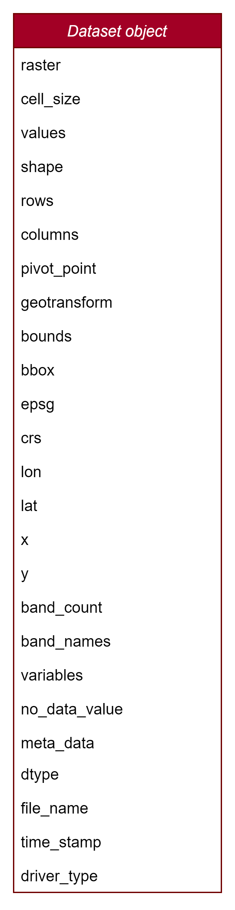
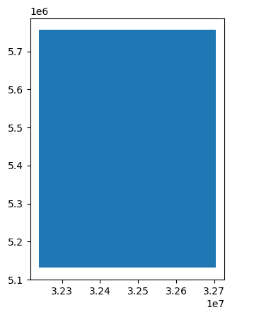
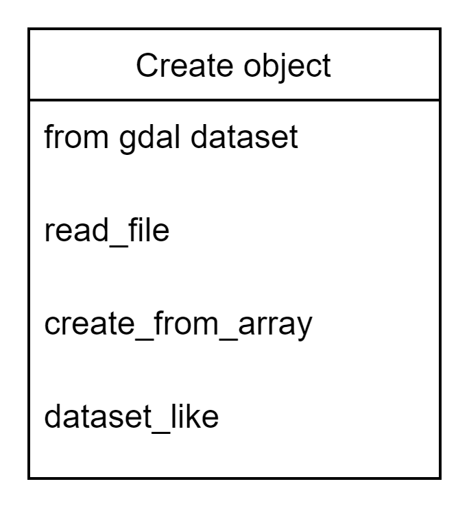
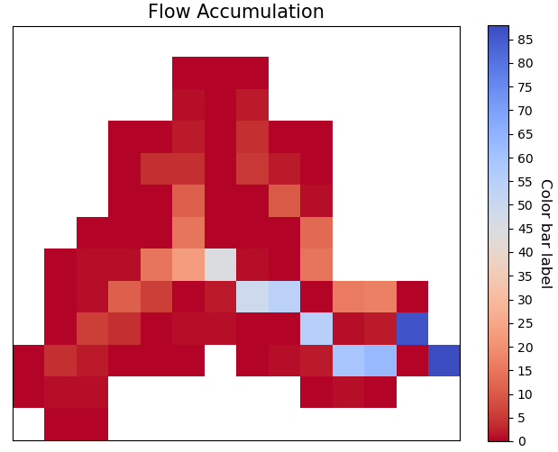
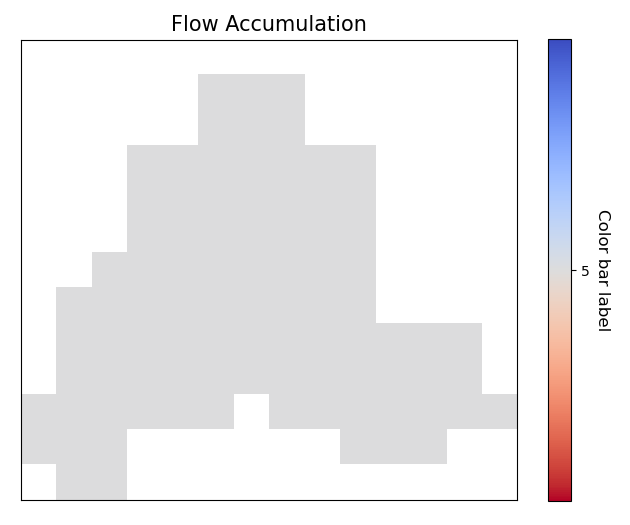
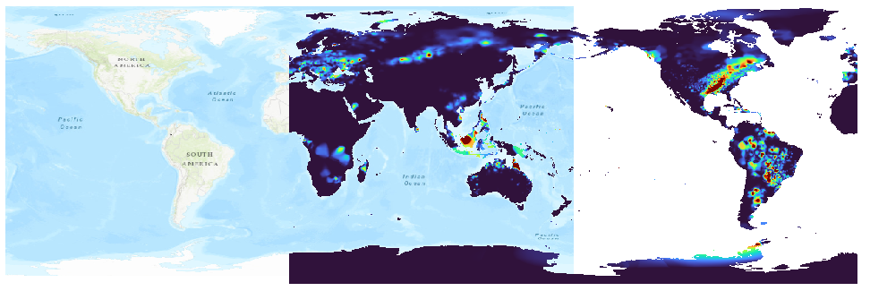
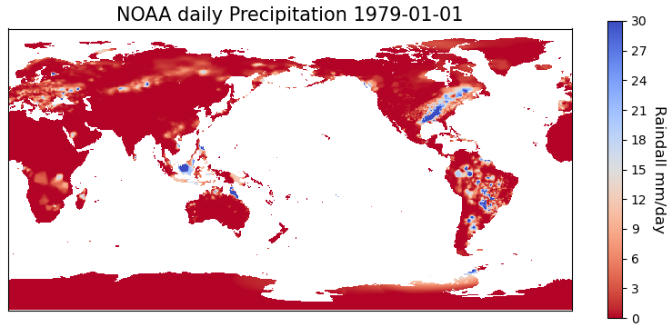
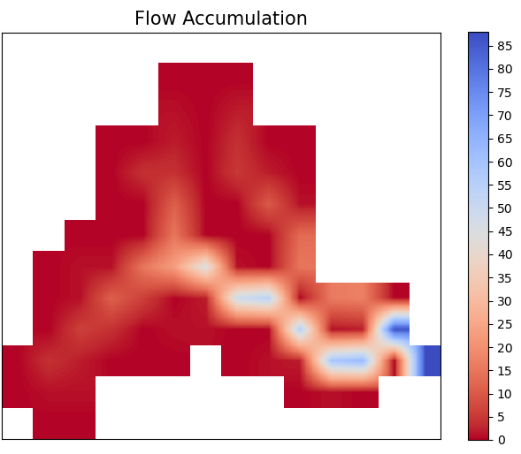

dataset#
- dataset module contains Two classes
DatasetandDataCube.
.. digraph:: Linking
dataset -> Dataset;
dataset -> DataCube;
dpi=200;
- Dataset represent a raster object which could be created from reading a geotiff, netcdf, ascii or any file format/driver supported by gdal.
- The raster could have single or multi bands.
-
The raster could have different variables (like netcdf file) and these variable can have similar or different dimensions.
-
DataCube represent a stack of raster's which have the same dimensions, contains data that have same dimensions (rows & columns).
Dataset#
- The main purpose of the
Datasetobject is to deal with raster objects, single or multi-bands, has variables/subsets like netcdf file or has one variable like most GeoTIFF files.

- The
Datasetobject data model is as following

- To import the Dataset object
read_file method to read any raster file.
read_file#
- to read any files using the Dataset object you can use the
read_filemethod.
path = "examples/data/dem/DEM5km_Rhine_burned_fill.tif"
dataset = Dataset.read_file(path)
dataset.plot(title="Rhine river basin", ticks_spacing=500,cmap="terrain", color_scale=1, vmin=0,
cbar_label="Elevation (m)")
- The
read_filemethod detects the type of the input file from the extension at the end of the path. -
Similarly, you can read an ascii file using the same way.
-
For ASCII files
path = "examples/data/dem/dem5km_rhine.asc"
dataset = Dataset.read_file(path)
dataset.plot(title="Rhine river basin", ticks_spacing=500,cmap="terrain", color_scale=1, vmin=0,
cbar_label="Elevation (m)")
path = "examples/data/dem/dem5km_rhine.nc"
dataset = Dataset.read_file(path)
dataset.plot(title="Rhine river basin", ticks_spacing=500,cmap="terrain", color_scale=1, vmin=0,
cbar_label="Elevation (m)")
Dataset object attributes#
- The Dataset object has the following attributes, which enables you to access all the stored data in you raster file (GeoTIFF/NetCDF/ASCII)

raster#
print(dataset.raster)
<osgeo.gdal.Dataset; proxy of <Swig Object of type 'GDALDatasetShadow *' at 0x0000026C8DD51FE0> >
cell_size#
values#
print(dataset.values)
>>> array([[-3.4028235e+38, -3.4028235e+38, -3.4028235e+38, ...,
-3.4028235e+38, -3.4028235e+38, -3.4028235e+38],
[-3.4028235e+38, -3.4028235e+38, -3.4028235e+38, ...,
-3.4028235e+38, -3.4028235e+38, -3.4028235e+38],
[-3.4028235e+38, -3.4028235e+38, -3.4028235e+38, ...,
-3.4028235e+38, -3.4028235e+38, -3.4028235e+38],
...,
[-3.4028235e+38, -3.4028235e+38, -3.4028235e+38, ...,
-3.4028235e+38, -3.4028235e+38, -3.4028235e+38],
[-3.4028235e+38, -3.4028235e+38, -3.4028235e+38, ...,
-3.4028235e+38, -3.4028235e+38, -3.4028235e+38],
[-3.4028235e+38, -3.4028235e+38, -3.4028235e+38, ...,
-3.4028235e+38, -3.4028235e+38, -3.4028235e+38]], dtype=float32)
shape#
rows#
columns#
pivot_point#
- The upper left corner of the raster (minimum lon/x, maximum lat/y).
geotransform#
- geotransform data of the upper left corner of the raster (minimum lon/x, pixel-size, rotation, maximum lat/y, rotation, pixel-size).
bounds#
bbox#
epsg#
- integer reference number that defines the projection (https://epsg.io/)
crs#
print(dataset.crs)
>>> 'PROJCS["ETRS89 / UTM zone 32N (zE-N)",GEOGCS["ETRS89",DATUM["European_Terrestrial_Reference_System_1989",SPHEROID["GRS 1980",6378137,298.257222101004,AUTHORITY["EPSG","7019"]],AUTHORITY["EPSG","6258"]],PRIMEM["Greenwich",0],UNIT["degree",0.0174532925199433,AUTHORITY["EPSG","9122"]],AUTHORITY["EPSG","4258"]],PROJECTION["Transverse_Mercator"],PARAMETER["latitude_of_origin",0],PARAMETER["central_meridian",9],PARAMETER["scale_factor",0.9996],PARAMETER["false_easting",32500000],PARAMETER["false_northing",0],UNIT["metre",1,AUTHORITY["EPSG","9001"]],AXIS["Easting",EAST],AXIS["Northing",NORTH],AUTHORITY["EPSG","4647"]]'
lat/y#
dataset.lat or dataset.y
>>> array([5753581.42235, 5748581.42235, 5743581.42235, 5738581.42235,
5733581.42235, 5728581.42235, 5723581.42235, 5718581.42235,
5713581.42235, 5708581.42235, 5703581.42235, 5698581.42235,
5693581.42235, 5688581.42235, 5683581.42235, 5678581.42235,
5673581.42235, 5668581.42235, 5663581.42235, 5658581.42235,
5653581.42235, 5648581.42235, 5643581.42235, 5638581.42235,
5633581.42235, 5628581.42235, 5623581.42235, 5618581.42235,
5613581.42235, 5608581.42235, 5603581.42235, 5598581.42235,
5593581.42235, 5588581.42235, 5583581.42235, 5578581.42235,
5573581.42235, 5568581.42235, 5563581.42235, 5558581.42235,
5553581.42235, 5548581.42235, 5543581.42235, 5538581.42235,
5533581.42235, 5528581.42235, 5523581.42235, 5518581.42235,
5513581.42235, 5508581.42235, 5503581.42235, 5498581.42235,
5493581.42235, 5488581.42235, 5483581.42235, 5478581.42235,
5473581.42235, 5468581.42235, 5463581.42235, 5458581.42235,
5453581.42235, 5448581.42235, 5443581.42235, 5438581.42235,
5433581.42235, 5428581.42235, 5423581.42235, 5418581.42235,
5413581.42235, 5408581.42235, 5403581.42235, 5398581.42235,
5393581.42235, 5388581.42235, 5383581.42235, 5378581.42235,
5373581.42235, 5368581.42235, 5363581.42235, 5358581.42235,
5353581.42235, 5348581.42235, 5343581.42235, 5338581.42235,
5333581.42235, 5328581.42235, 5323581.42235, 5318581.42235,
5313581.42235, 5308581.42235, 5303581.42235, 5298581.42235,
5293581.42235, 5288581.42235, 5283581.42235, 5278581.42235,
5273581.42235, 5268581.42235, 5263581.42235, 5258581.42235,
5253581.42235, 5248581.42235, 5243581.42235, 5238581.42235,
5233581.42235, 5228581.42235, 5223581.42235, 5218581.42235,
5213581.42235, 5208581.42235, 5203581.42235, 5198581.42235,
5193581.42235, 5188581.42235, 5183581.42235, 5178581.42235,
5173581.42235, 5168581.42235, 5163581.42235, 5158581.42235,
5153581.42235, 5148581.42235, 5143581.42235, 5138581.42235,
5133581.42235])
lon/x#
dataset.lon/dataset.x
array([32241763.70388, 32246763.70388, 32251763.70388, 32256763.70388,
32261763.70388, 32266763.70388, 32271763.70388, 32276763.70388,
32281763.70388, 32286763.70388, 32291763.70388, 32296763.70388,
32301763.70388, 32306763.70388, 32311763.70388, 32316763.70388,
32321763.70388, 32326763.70388, 32331763.70388, 32336763.70388,
32341763.70388, 32346763.70388, 32351763.70388, 32356763.70388,
32361763.70388, 32366763.70388, 32371763.70388, 32376763.70388,
32381763.70388, 32386763.70388, 32391763.70388, 32396763.70388,
32401763.70388, 32406763.70388, 32411763.70388, 32416763.70388,
32421763.70388, 32426763.70388, 32431763.70388, 32436763.70388,
32441763.70388, 32446763.70388, 32451763.70388, 32456763.70388,
32461763.70388, 32466763.70388, 32471763.70388, 32476763.70388,
32481763.70388, 32486763.70388, 32491763.70388, 32496763.70388,
32501763.70388, 32506763.70388, 32511763.70388, 32516763.70388,
32521763.70388, 32526763.70388, 32531763.70388, 32536763.70388,
32541763.70388, 32546763.70388, 32551763.70388, 32556763.70388,
32561763.70388, 32566763.70388, 32571763.70388, 32576763.70388,
32581763.70388, 32586763.70388, 32591763.70388, 32596763.70388,
32601763.70388, 32606763.70388, 32611763.70388, 32616763.70388,
32621763.70388, 32626763.70388, 32631763.70388, 32636763.70388,
32641763.70388, 32646763.70388, 32651763.70388, 32656763.70388,
32661763.70388, 32666763.70388, 32671763.70388, 32676763.70388,
32681763.70388, 32686763.70388, 32691763.70388, 32696763.70388,
32701763.70388])
band_count#
band_names#
variables#
no_data_value#
meta_data#
print(dataset.meta_data)
{'Band1#grid_mapping': 'transverse_mercator', 'Band1#long_name': 'GDAL Band Number 1', 'Band1#_FillValue': '-3.4028235e+38', 'NC_GLOBAL#Conventions': 'CF-1.5', 'NC_GLOBAL#GDAL': 'GDAL 3.6.3, released 2023/03/07', 'NC_GLOBAL#GDAL_AREA_OR_POINT': 'Area', 'NC_GLOBAL#history': 'Sun Apr 16 22:17:20 2023: GDAL CreateCopy( examples/data/dem/dem5km_rhine.nc, ... )', 'transverse_mercator#crs_wkt': 'PROJCS["ETRS89 / UTM zone 32N (zE-N)",GEOGCS["ETRS89",DATUM["European_Terrestrial_Reference_System_1989",SPHEROID["GRS 1980",6378137,298.257222101004,AUTHORITY["EPSG","7019"]],AUTHORITY["EPSG","6258"]],PRIMEM["Greenwich",0],UNIT["degree",0.0174532925199433,AUTHORITY["EPSG","9122"]],AUTHORITY["EPSG","4258"]],PROJECTION["Transverse_Mercator"],PARAMETER["latitude_of_origin",0],PARAMETER["central_meridian",9],PARAMETER["scale_factor",0.9996],PARAMETER["false_easting",32500000],PARAMETER["false_northing",0],UNIT["metre",1,AUTHORITY["EPSG","9001"]],AXIS["Easting",EAST],AXIS["Northing",NORTH],AUTHORITY["EPSG","4647"]]', 'transverse_mercator#false_easting': '32500000', 'transverse_mercator#false_northing': '0', 'transverse_mercator#GeoTransform': '32239263.70388 5000 0 5756081.42235 0 -5000 ', 'transverse_mercator#grid_mapping_name': 'transverse_mercator', 'transverse_mercator#inverse_flattening': '298.257222101004', 'transverse_mercator#latitude_of_projection_origin': '0', 'transverse_mercator#longitude_of_central_meridian': '9', 'transverse_mercator#longitude_of_prime_meridian': '0', 'transverse_mercator#long_name': 'CRS definition', 'transverse_mercator#scale_factor_at_central_meridian': '0.9996', 'transverse_mercator#semi_major_axis': '6378137', 'transverse_mercator#spatial_ref': 'PROJCS["ETRS89 / UTM zone 32N (zE-N)",GEOGCS["ETRS89",DATUM["European_Terrestrial_Reference_System_1989",SPHEROID["GRS 1980",6378137,298.257222101004,AUTHORITY["EPSG","7019"]],AUTHORITY["EPSG","6258"]],PRIMEM["Greenwich",0],UNIT["degree",0.0174532925199433,AUTHORITY["EPSG","9122"]],AUTHORITY["EPSG","4258"]],PROJECTION["Transverse_Mercator"],PARAMETER["latitude_of_origin",0],PARAMETER["central_meridian",9],PARAMETER["scale_factor",0.9996],PARAMETER["false_easting",32500000],PARAMETER["false_northing",0],UNIT["metre",1,AUTHORITY["EPSG","9001"]],AXIS["Easting",EAST],AXIS["Northing",NORTH],AUTHORITY["EPSG","4647"]]', 'x#long_name': 'x coordinate of projection', 'x#standard_name': 'projection_x_coordinate', 'x#units': 'm', 'y#long_name': 'y coordinate of projection', 'y#standard_name': 'projection_y_coordinate', 'y#units': 'm'}
dtype#
file_name#
time_stamp#
driver_type#
color_table#
print(dataset.color_table)
band values red green blue alpha
0 1 0 0 0 0 0
1 1 1 112 153 89 255
2 1 2 0 0 0 0
3 1 3 242 238 162 255
4 1 4 0 0 0 0
5 1 5 242 206 133 255
6 1 6 0 0 0 0
7 1 7 194 140 124 255
8 1 8 0 0 0 0
9 1 9 214 193 156 255
Create Dataset object#

create_from_array#
create_from_arraymethod creates aDatasetfrom a given array and geotransform data and save the tif file if a Path is given or it will return the gdal.Dataset
Parameters#
path : [str], optional
Path to save the Raster, if '' is given a memory raster will be returned. The default is ''.
arr : [array], optional
numpy array. The default is ''.
geo : [list], optional
geotransform list [minimum lon, pixel-size, rotation, maximum lat, rotation,
pixel-size]. The default is ''.
nodatavalue : TYPE, optional
DESCRIPTION. The default is -9999.
epsg: [integer]
integer reference number to the new projection (https://epsg.io/)
(default 3857 the reference no of WGS84 web mercator )
Returns#
dst : [gdal.Dataset/save raster to drive].
if a path is given the created raster will be saved to drive, if not
a gdal.Dataset will be returned.
- If we take the array we obtained from the
read_array, do some arithmetic operation in it, then we created agdal.DataSetout of it
src = Raster.createRaster(arr=arr, geo=geo, epsg=str(epsg), nodatavalue=no_data_val)
Map.plot(src, title="Flow Accumulation")

dataset_like#
dataset_likemethod creates a Geotiff raster like another input raster, new raster will have the same projection, coordinates or the top left corner of the original raster, cell size, nodata value, and number of rows and columns the raster and the dem should have the same number of columns and rows
Parameters#
src : [gdal.dataset]
source raster to get the spatial information
array : [numpy array]
to store in the new raster
path : [String]
path to save the new raster including new raster name and extension (.tif)
pixel_type : [integer]
type of the data to be stored in the pixels,default is 1 (float32)
for example pixel type of flow direction raster is unsigned integer
1 for float32
2 for float64
3 for Unsigned integer 16
4 for Unsigned integer 32
5 for integer 16
6 for integer 32
Returns#
save the new raster to the given path
- If we have made some calculation on raster array and we want to save the array back in the raster
arr2 = np.ones(shape=arr.shape, dtype=np.float64) * nodataval
arr2[~np.isclose(arr, nodataval, rtol=0.001)] = 5
path = "examples/data/rasterlike.tif"
Raster.rasterLike(src, arr2, path)
gda.Open

Access data methods#

read_array#
arr = Dataset.read_array(src)
print(arr)
array([[-3.402823e+38, -3.402823e+38, -3.402823e+38, -3.402823e+38,
-3.402823e+38, -3.402823e+38, -3.402823e+38, -3.402823e+38,
-3.402823e+38, -3.402823e+38, -3.402823e+38, -3.402823e+38,
-3.402823e+38, -3.402823e+38],
[-3.402823e+38, -3.402823e+38, -3.402823e+38, -3.402823e+38,
-3.402823e+38, 0.000000e+00, 0.000000e+00, 0.000000e+00,
-3.402823e+38, -3.402823e+38, -3.402823e+38, -3.402823e+38,
-3.402823e+38, -3.402823e+38],
[-3.402823e+38, -3.402823e+38, -3.402823e+38, -3.402823e+38,
-3.402823e+38, 1.000000e+00, 0.000000e+00, 2.000000e+00,
-3.402823e+38, -3.402823e+38, -3.402823e+38, -3.402823e+38,
-3.402823e+38, -3.402823e+38],
[-3.402823e+38, -3.402823e+38, -3.402823e+38, 0.000000e+00,
0.000000e+00, 2.000000e+00, 0.000000e+00, 4.000000e+00,
0.000000e+00, 0.000000e+00, -3.402823e+38, -3.402823e+38,
-3.402823e+38, -3.402823e+38],
[-3.402823e+38, -3.402823e+38, -3.402823e+38, 0.000000e+00,
4.000000e+00, 4.000000e+00, 0.000000e+00, 5.000000e+00,
2.000000e+00, 0.000000e+00, -3.402823e+38, -3.402823e+38,
-3.402823e+38, -3.402823e+38],
[-3.402823e+38, -3.402823e+38, -3.402823e+38, 0.000000e+00,
0.000000e+00, 1.100000e+01, 0.000000e+00, 0.000000e+00,
1.000000e+01, 1.000000e+00, -3.402823e+38, -3.402823e+38,
-3.402823e+38, -3.402823e+38],
[-3.402823e+38, -3.402823e+38, 0.000000e+00, 0.000000e+00,
0.000000e+00, 1.500000e+01, 0.000000e+00, 0.000000e+00,
0.000000e+00, 1.300000e+01, -3.402823e+38, -3.402823e+38,
-3.402823e+38, -3.402823e+38],
[-3.402823e+38, 0.000000e+00, 1.000000e+00, 1.000000e+00,
1.500000e+01, 2.300000e+01, 4.500000e+01, 1.000000e+00,
0.000000e+00, 1.500000e+01, -3.402823e+38, -3.402823e+38,
-3.402823e+38, -3.402823e+38],
[-3.402823e+38, 0.000000e+00, 1.000000e+00, 1.100000e+01,
6.000000e+00, 0.000000e+00, 2.000000e+00, 4.900000e+01,
5.400000e+01, 0.000000e+00, 1.600000e+01, 1.700000e+01,
0.000000e+00, -3.402823e+38],
[-3.402823e+38, 0.000000e+00, 6.000000e+00, 4.000000e+00,
0.000000e+00, 1.000000e+00, 1.000000e+00, 0.000000e+00,
0.000000e+00, 5.500000e+01, 1.000000e+00, 2.000000e+00,
8.600000e+01, -3.402823e+38],
[ 0.000000e+00, 4.000000e+00, 2.000000e+00, 0.000000e+00,
0.000000e+00, 0.000000e+00, -3.402823e+38, 0.000000e+00,
1.000000e+00, 2.000000e+00, 5.900000e+01, 6.300000e+01,
0.000000e+00, 8.800000e+01],
[ 0.000000e+00, 1.000000e+00, 1.000000e+00, -3.402823e+38,
-3.402823e+38, -3.402823e+38, -3.402823e+38, -3.402823e+38,
-3.402823e+38, 0.000000e+00, 1.000000e+00, 0.000000e+00,
-3.402823e+38, -3.402823e+38],
[-3.402823e+38, 0.000000e+00, 0.000000e+00, -3.402823e+38,
-3.402823e+38, -3.402823e+38, -3.402823e+38, -3.402823e+38,
-3.402823e+38, -3.402823e+38, -3.402823e+38, -3.402823e+38,
-3.402823e+38, -3.402823e+38]], dtype=float32)
Blocksize and ReadAsArray#
- The
read_arraymethod reads the raster as a numpy array, the method can take a block size to read the raster in blocks, this is useful when the raster is too large to be read at once.
When you know the block size, you can more effectively plan and execute data processing tasks: - Data Reading/Writing: When reading or writing data, doing so in multiples of the block size can reduce the number of disk accesses required, as each access operation will align with the blocks on disk. - Optimizations: Some formats are optimized for specific block sizes, or for being accessed in certain ways. For example, tiled TIFFs might perform better with square block sizes.
dataset = Dataset.read_file("tests/data/geotiff/era5_land_monthly_averaged.tif")
arr = dataset.read_array(window=[0, 0, 5, 5])
print(arr.shape)
(5, 5)
Band statistics (stats)#
- To get a summary statistics (min, max, mean, std) of a band/all bands.
- The method returns a
DataFrameof statistics values of each band, the dataframe has the following columns: [min, max, mean, std], the index of the dataframe is the band names.
era5_image = "tests/data/geotiff/era5_land_monthly_averaged.tif"
dataset = Dataset.read_file(era5_image)
stats = dataset.stats()
print(stats)
min max mean std
Band_1 270.369720 270.762299 270.551361 0.154270
Band_2 269.611938 269.744751 269.673645 0.043788
Band_3 273.641479 274.168823 273.953979 0.198447
Band_4 273.991516 274.540344 274.310669 0.205754
era5_image = "tests/data/geotiff/era5_land_monthly_averaged.tif"
dataset = Dataset.read_file(era5_image)
mask = gpd.read_file("tests/data/geotiff/era5-mask.geojson")
stats = dataset.stats(mask=mask)
print(stats)
min max mean std
Band_1 270.369720 270.399017 270.384369 0.014648
Band_2 269.651001 269.744751 269.697876 0.046875
Band_3 273.889526 273.901245 273.895386 0.005859
Band_4 274.235657 274.255188 274.245422 0.009766
Write raster to disk#
to write the dataset object to disk using any of the raster formats (GeoTIFF/NetCDF/ASCII), you can use the to_file
method.

to_file#
to_filewrites the Dataset object to disk.
Parameters#
path: [str]
a path including the name of the raster and extension.
>>> path = "data/cropped.tif"
driver: [str]
driver = "geotiff"/"ascii"/"netcdf".
band: [int]
band index, needed only in case of ascii drivers. Default is 0.
GeoTIFF#
ASCII#
- The ASCII file will look likencols 93
nrows 125
xllcorner 32239263.70388
yllcorner 5131081.42235
cellsize 5000.0
NODATA_value -3.4028230607370965e+38
0.03 0.03 0.03 0.03 0.03 0.03 0.03 0.03 0.03 0.03 0.03 0.03 0.03 0.03
0.03 0.03 0.03 0.03 0.03 0.03 0.03 0.03 0.03 0.03 0.03 0.03 0.03 0.03
0.03 0.03 0.03 0.03 0.03 0.03 0.03 0.03 0.03 0.03 0.03 0.03 0.03 0.03
0.03 0.03 0.03 0.03 0.03 0.03 0.03 0.03 0.03 0.03 0.03 0.03 0.03 0.03
0.03 0.03 0.03 0.03 0.03 0.03 0.03 0.03 0.03 0.03 0.03 0.03 0.03 0.03
0.03 0.03 0.03 0.03 0.03 0.03 0.03 0.03 0.03 0.03 0.03 0.03 0.03 0.03
0.03 0.03 0.03 0.03 0.03 0.03 0.03 0.03 0.03 0.03 0.03 0.03 0.03 0.03
0.03 0.03 0.03 0.03 0.03 0.03 0.03 0.03 0.03 0.03 0.03 0.03 0.03 0.03
0.03 0.03 0.03 0.03 0.03 0.03 0.03 0.03 0.03 0.03 0.03 0.03 0.03 0.03
0.03 0.03 0.03 0.03 0.03 0.03 0.03 0.03 0.03 0.03 0.03 0.03 0.03 0.03
0.03 0.03 0.03 0.03 0.03 0.03 0.03 0.03 0.03 0.03 0.03 0.03 0.03 0.03
0.03 0.03 0.03 0.03 0.03 0.03 0.03 0.03 0.03 0.03 0.03 0.03 0.03 0.03
0.03 0.03 0.03 0.03 0.03 0.03 0.03 0.03 0.03 0.03 0.03 0.03 0.03 0.03
NetCDF#
Spatial properties#

convert_longitude#
- some files (especially netcdf files) uses longitude values from 0 degrees to 360 degrees, instead of the usual,
GIS-standard, arrangement of -180 degrees to 180 degrees for longitude centered on the Prime Meridian, and -90 degrees
to 90 degrees for latitude centered on the Equator. the
convert_longitudemethod corrects such behavior.

- read the raster files using the
read_fileand plot it with theplotmethod.
dataset = Dataset.read_file(path)
fig, ax = dataset.plot(
band=0, figsize=(10, 5), title="Noah daily Precipitation 1979-01-01", cbar_label="Raindall mm/day", vmax=30,
cbar_length=0.85
)

- To correct the values of the longitude you can use the
convert_longitudeas follows.
new_dataset = dataset.convert_longitude()
new_dataset.plot(
band=0, figsize=(10, 5), title="Noah daily Precipitation 1979-01-01", cbar_label="Raindall mm/day", vmax=30,
cbar_length=0.85
)
resample#
resamplereproject a raster to any projection (default the WGS84 web mercator projection, without resampling) The function returns a GDAL in-memory file object, where you can ReadAsArray etc.
Parameters#
src : [gdal.Dataset]
gdal raster (src=gdal.Open("dem.tif"))
cell_size : [integer]
new cell size to resample the raster. (default empty so raster will not be resampled)
resample_technique : [String]
resampling technique default is "Nearest"
https://gisgeography.com/raster-resampling/
"Nearest" for nearest neighbour,"cubic" for cubic convolution,
"bilinear" for bilinear
Returns#
raster : [gdal.Dataset]
gdal object (you can read it by ReadAsArray)
print("Original Cell Size =" + str(geo[1]))
cell_size = 100
dst = Raster.resampleRaster(src, cell_size, resample_technique="bilinear")
dst_arr = Raster.read_array(dst)
_, new_geo = Raster.getProjectionData(dst)
print("New cell size is " + str(new_geo[1]))
Map.plot(dst, title="Flow Accumulation")
Original Cell Size =4000.0
New cell size is 100.0

to_crs#
to_crsre-projects a raster to any projection (default the WGS84 web mercator projection, without resampling) The function returns a GDAL in-memory file object, where you can ReadAsArray etc.
Parameters#
to_epsg: [integer]
reference number to the new projection (https://epsg.io/)
(default 3857 the reference no of WGS84 web mercator )
method: [String]
resampling technique default is "Nearest"
https://gisgeography.com/raster-resampling/
"nearest neighbour" for nearest neighbour,"cubic" for cubic convolution,
"bilinear" for bilinear
maintain_alignment : [bool]
True to maintain the number of rows and columns of the raster the same after re-projection. Default is False.
Returns#
raster:
gdal dataset (you can read it by ReadAsArray)
print("current EPSG - " + str(epsg))
to_epsg = 4326
dst = Raster.projectRaster(src, to_epsg=to_epsg, option=1)
new_epsg, new_geo = Raster.getProjectionData(dst)
print("New EPSG - " + str(new_epsg))
print("New Geotransform - " + str(new_geo))
current EPSG - 32618
New EPSG - 4326
New Geotransform - (-75.60441, 0.03606600000000526, 0.0, 4.704305, 0.0, -0.03606600000000526)
- Option 2
dst = Raster.projectRaster(src, to_epsg=to_epsg, option=2)
new_epsg, new_geo = Raster.getProjectionData(dst)
print("New EPSG - " + str(new_epsg))
print("New Geotransform - " + str(new_geo))
New EPSG - 4326
New Geotransform - (-75.60441003848668, 0.03611587177268461, 0.0, 4.704560448076901, 0.0, -0.03611587177268461)
crop#
- If you have an array and you want to clip/crop it using another raster/array.
Crop array using a raster#
- The
cropmethod clips/crops (matches the location of nodata value from source raster to destination raster).
Parameters """""""""" src: [gdal.dataset/np.ndarray] raster you want to clip/store NoDataValue in its cells exactly the same like mask raster mask: [gdal.dataset/np.ndarray] mask raster to get the location of the NoDataValue and where it is in the array mask_noval: [numeric] in case the mask is np.ndarray, the mask_noval have to be given.
Returns """"""" dst: [gdal.dataset] the second raster with NoDataValue stored in its cells exactly the same like src raster
aligned_raster = "examples/data/Evaporation_ECMWF_ERA-Interim_mm_daily_2009.01.01.tif"
band = 1
dst = Dataset.Open(aligned_raster)
dst_arr = dst.read_array()
dst_nodataval = dst.no_data_value[band - 1]
Map.plot(
dst_arr,
nodataval=dst_nodataval,
title="Before Cropping-Evapotranspiration",
color_scale=1,
ticks_spacing=0.01,
)
dst_arr_cropped = Raster.cropAlligned(dst_arr, src)
Map.plot(
dst_arr_cropped,
nodataval=nodataval,
title="Cropped array",
color_scale=1,
ticks_spacing=0.01,
)

Crop raster using another raster while preserving the alignment#
- cropping rasters may change the alignment of the cells and to keep the alignment during cropping a raster we will crop the same previous raster but will give the input to the function as a gdal.dataset object.
dst_cropped = Raster.cropAlligned(dst, src)
Map.plot(dst_cropped, title="Cropped raster", color_scale=1, ticks_spacing=0.01)

Crop raster using array#
dst_cropped = Raster.cropAlligned(dst, arr, mask_noval=nodataval)
Map.plot(dst_cropped, title="Cropped array", color_scale=1, ticks_spacing=0.01)

crop#
cropmethod crops a raster using another raster/polygon.
Parameters """""""""" mask: [Polygon GeoDataFrame/Dataset] GeodataFrame with a polygon geometry, or a Dataset object. touch: [bool] To include the cells that touch the polygon not only those that lie entirely inside the polygon mask. Default is True. inplace: [bool] True to make the changes in place.
Returns """"""" Dataset: Dataset object.
RasterA = gdal.Open(aligned_raster)
epsg, geotransform = Raster.getProjectionData(RasterA)
print("Raster EPSG = " + str(epsg))
print("Raster Geotransform = " + str(geotransform))
Map.plot(RasterA, title="Raster to be cropped", color_scale=1, ticks_spacing=1)
Raster EPSG = 32618
Raster Geotransform = (432968.1206170588, 4000.0, 0.0, 520007.787999178, 0.0, -4000.0)

- We will use the soil raster from the previous example as a mask so the projection is different between the raster and the mask and the cell size is also different
dst = Raster.crop(RasterA, soil_raster)
dst_epsg, dst_geotransform = Raster.getProjectionData(dst)
print("resulted EPSG = " + str(dst_epsg))
print("resulted Geotransform = " + str(dst_geotransform))
Map.plot(dst, title="Cropped Raster", color_scale=1, ticks_spacing=1)
resulted EPSG = 32618
resulted Geotransform = (432968.1206170588, 4000.0, 0.0, 520007.787999178, 0.0, -4000.0)

align#
matchRasterAlignmentmethod matches the coordinate system and the number of of rows & columns between two rasters alignment_src is the source of the coordinate system, number of rows, number of columns & cell size data_src is the source of data values in cells the result will be a raster with the same structure like alignment_src but with values from data_src using Nearest Neighbour interpolation algorithm
Parameters#
alignment_src : [gdal.dataset/string]
spatial information source raster to get the spatial information
(coordinate system, no of rows & columns)
data_src : [gdal.dataset/string]
data values source raster to get the data (values of each cell)
Returns#
dst : [gdal.dataset]
result raster in memory
soil_raster = gdal.Open(soilmappath)
epsg, geotransform = Raster.getProjectionData(soil_raster)
print("Before alignment EPSG = " + str(epsg))
print("Before alignment Geotransform = " + str(geotransform))
# cell_size = geotransform[1]
Map.plot(soil_raster, title="To be aligned", color_scale=1, ticks_spacing=1)
Before alignment EPSG = 3116
Before alignment Geotransform = (830606.744300001, 30.0, 0.0, 1011325.7178760837, 0.0, -30.0)
soil_aligned = Raster.matchRasterAlignment(src, soil_raster)
New_epsg, New_geotransform = Raster.getProjectionData(soil_aligned)
print("After alignment EPSG = " + str(New_epsg))
print("After alignment Geotransform = " + str(New_geotransform))
Map.plot(soil_aligned, title="After alignment", color_scale=1, ticks_spacing=1)
After alignment EPSG = 32618
After alignment Geotransform = (432968.1206170588, 4000.0, 0.0, 520007.787999178, 0.0, -4000.0)

get_cell_coords#
getCellCoordsreturns the coordinates of all cell centres inside the domain (only the cells that does not have nodatavalue)
Parameters#
src : [gdal_Dataset]
Get the data from the gdal datasetof the DEM
Returns#
coords : array
Array with a list of the coordinates to be interpolated, without the Nan
mat_range : array
Array with all the centres of cells in the domain of the DEM
coords, centers_coords = Raster.getCellCoords(src)
print(coords)
array([[434968.12061706, 520007.78799918],
[434968.12061706, 520007.78799918],
[434968.12061706, 520007.78799918],
[434968.12061706, 520007.78799918],
[434968.12061706, 520007.78799918],
[434968.12061706, 520007.78799918],
[434968.12061706, 520007.78799918],
print(centers_coords)
array([[[434968.12061706, 520007.78799918],
[438968.12061706, 520007.78799918],
[442968.12061706, 520007.78799918],
[446968.12061706, 520007.78799918],
[450968.12061706, 520007.78799918],
[454968.12061706, 520007.78799918],
[458968.12061706, 520007.78799918],
overlay#
The overlay function takes two ascii files the BaseMap which is the
raster/asc file of the polygons and the secon is the asc file you want to
extract its values.
def overlayMap(
path: str,
classes_map: Union[str, np.ndarray],
exclude_value: Union[float, int],
compressed: bool=False,
occupied_cells_only: bool=True) -> Tuple[Dict[List[float], List[float]], int]:
"""
"""overlayMap.
OverlayMap extracts and return a list of all the values in an ASCII file,
if you have two maps one with classes, and the other map contains any type of values,
and you want to know the values in each class
Parameters#
path: [str] a path to ascii file. classes_map: [str/array] a path including the name of the ASCII and extension, or an array >>> path = "classes.asc" exclude_value: [Numeric] values you want to exclude from extracted values. compressed: [Bool] if the map you provided is compressed. occupied_cells_only: [Bool] if you want to count only cells that is not zero.
Returns#
ExtractedValues: [Dict] dictionary with a list of values in the basemap as keys and for each key a list of all the intersected values in the maps from the path. NonZeroCells: [dataframe] the number of cells in the map.
To extract the
import Hapi.raster as R
Path = "F:/02Case studies/Hapi Examples/"
SavePath = Path + "results/ZonalStatistics"
BaseMapF = Path + "data/Polygons.tif"
ExcludedValue = 0
Compressed = True
OccupiedCellsOnly = False
ExtractedValues, Cells = R.OverlayMap(Path+"DepthMax22489.zip", BaseMapF,ExcludedValue, Compressed,OccupiedCellsOnly)
count_domain_cells#
- To number of cells in a raster that are not
no_data_valuevalue.
Parameters#
band: [int] band index. Default is 0.
Returns#
int: Number of cells
path = "examples/data/dem/DEM5km_Rhine_burned_fill.tif"
dataset = Dataset.read_file(path)
cells = dataset.count_domain_cells()
print(f"Number of cells = {cells}")
Number of cells = 6374
Mathematical operations#

apply#
applyexecutes a mathematical operation on raster array and returns the result
Parameters#
src : [gdal.dataset]
source raster to that you want to make some calculation on its values
fun: [function]
defined function that takes one input which is the cell value
Returns#
Dataset
gdal dataset object
def classify(val):
if val < 20:
val = 1
elif val < 40:
val = 2
elif val < 60:
val = 3
elif val < 80:
val = 4
elif val < 100:
val = 5
else:
val = 0
return val
dst = Raster.mapAlgebra(src, classify)
Map.plot(dst, title="Classes", color_scale=4, ticks_spacing=1)

fill#
filltakes a raster and fill it with one value.
Parameters#
src : [gdal.dataset]
source raster
val: [numeric]
numeric value
save_to : [str]
path including the extension (.tif)
Returns#
raster : [saved on disk]
the raster will be saved directly to the path you provided.
path = "examples/data/fill-raster-example.tif"
value = 20
Raster.rasterFill(src, value, save_to=path)
"now the resulted raster is saved to disk"
dst = gdal.Open(path)
Map.plot(dst, title="Flow Accumulation")

nearestNeighbour#
nearestCellcalculates the the indices (row, col) of nearest cell in a given raster to a station coordinate system of the raster has to be projected to be able to calculate the distance
Parameters#
Raster: [gdal.dataset]
raster to get the spatial information (coordinates of each cell)
StCoord: [Dataframe]
dataframe with two columns "x", "y" contains the coordinates
of each station
Returns#
StCoord:
the same input dataframe with two extra columns "cellx","celly"
points = pd.read_csv("examples/data/points.csv")
print(points)
id x y
0 1 454795.6728 503143.3264
1 2 443847.5736 481850.7151
2 3 454044.6935 481189.4256
3 4 464533.7067 502683.6482
4 5 463231.1242 486656.3455
5 6 487292.5152 478045.5720
points["row"] = np.nan
points["col"] = np.nan
points.loc[:, ["row", "col"]] = GC.nearestCell(src, points[["x", "y"]][:]).values
print(points)
id x y row col
0 1 454795.6728 503143.3264 4.0 5.0
1 2 443847.5736 481850.7151 9.0 2.0
2 3 454044.6935 481189.4256 9.0 5.0
3 4 464533.7067 502683.6482 4.0 7.0
4 5 463231.1242 486656.3455 8.0 7.0
5 6 487292.5152 478045.5720 10.0 13.0
Plotting#
color_table#
- The
color_tableproperty in theDatasetobject can assign a certain symbology to each band in the raster. - To assign a certain symbology you have to have to create a
Dataframecontaining the values and corresponding colors (hexadecimal number) for each band in the raster. - assigning a color_table to the raster file will help when opening the file in GIS software like QGIS or ArcGIS, the raster will be displayed with the colors you assigned to it.without the need to assign the colors manually.
print(df)
band values color
>>> 0 1 1 #709959
>>> 1 1 2 #F2EEA2
>>> 2 1 3 #F2CE85
>>> 3 2 1 #C28C7C
>>> 4 2 2 #D6C19C
>>> 5 2 3 #D6C19C
color_table property.
- When saving the raster to disk, the following file will be created along side the raster file.
.. code:: xml
<PAMDataset>
<PAMRasterBand band="1">
<ColorInterp>Palette</ColorInterp>
<ColorTable>
<Entry c1="0" c2="0" c3="0" c4="0" />
<Entry c1="112" c2="153" c3="89" c4="255" />
<Entry c1="0" c2="0" c3="0" c4="0" />
<Entry c1="242" c2="238" c3="162" c4="255" />
<Entry c1="0" c2="0" c3="0" c4="0" />
<Entry c1="242" c2="206" c3="133" c4="255" />
<Entry c1="0" c2="0" c3="0" c4="0" />
<Entry c1="194" c2="140" c3="124" c4="255" />
<Entry c1="0" c2="0" c3="0" c4="0" />
<Entry c1="214" c2="193" c3="156" c4="255" />
</ColorTable>
</PAMRasterBand>
</PAMDataset>
.. note::
- The values in the `values` column in the `DataFrame` should cover the entir range of values in the raster.
- Any value that is not in the `values` column will not be assigned any color.
Overviews#
Overviews are essentially lower resolution versions of a raster dataset. They are used to improve the performance of
rendering large raster datasets by providing pyramid layers of the same data at different resolutions. When you view
a large image at a small scale (zoomed out), Pyramids can use these overviews instead of the full-resolution data,
which speeds up the loading and display of the raster.
overviews can be stored in two ways:
Internal Overviews:
These are overviews that are stored within the same file as the main dataset. Many raster formats support
internal overviews.
External Overviews:
These are overviews stored in separate files, typically with the extension .ovr. External overviews are
useful when the raster format does not support internal overviews or when you want to keep the overviews
separate from the main dataset file.
To create an overview for a raster dataset you can use the create_overviews method.
create_overviews#
Parameters """""""""" resampling_method : str, optional The resampling method used to create the overviews, by default "NEAREST"
possible values are:
"NEAREST", "CUBIC", "AVERAGE", "GAUSS", "CUBICSPLINE", "LANCZOS", "MODE", "AVERAGE_MAGPHASE", "RMS",
"BILINEAR".
overview_levels : list, optional
The overview levels, overview_levels are restricted to the typical power-of-two reduction factors.
Default [2, 4, 8, 16, 32]
Returns """"""" internal/external overviews: The overview (also known as pyramids) could be internal or external depending on the state you read the dataset with.
- External (.ovr file):
If the dataset is read with a`read_only=True` then the overviews' file will be created as an
in the same directory of the dataset, with the same name of the dataset and .ovr extension.
- Internal:
If the dataset is read with a`read_only=False` then the overviews will be created internally in the
dataset, and the dataset needs to be saved/flushed to save the new changes to disk.
overview_count: [list]
a list property attribute of the overviews for each band.
path = "tests\data\geotiff\rhine\0_Rainfall_MSWEP_mm_daily_1979_1_1.tif"
dataset = Dataset.read_file(path)
dataset.create_overviews(resampling_method="nearest", overview_levels=[2, 4, 8, 16, 32])
print(dataset.overview_number)
>>> [5]
get_overview#
To get the overview of a certain band you can use the get_overview method. The overview is a gdal band object.
Parameters """""""""" band : int, optional The band index, by default 0 overview_index: [int] index of the overview. Default is 0.
Returns """"""" gdal.Band gdal band object
overview = dataset.get_overview(band=0, overview_index=0)
print(overview)
>>> <osgeo.gdal.Band; proxy of <Swig Object of type 'GDALRasterBandShadow *' at 0x0000020C1F9F9C60> >
recreate_overviews#
Parameters """""""""" resampling_method : str, optional The resampling method used to create the overviews, by default "nearest".
possible values are:
"NEAREST", "CUBIC", "AVERAGE", "GAUSS", "CUBICSPLINE", "LANCZOS", "MODE", "AVERAGE_MAGPHASE", "RMS",
"BILINEAR".
Raises """""" ValueError resampling_method should be one of {"NEAREST", "CUBIC", "AVERAGE", "GAUSS", "CUBICSPLINE", "LANCZOS", "MODE", "AVERAGE_MAGPHASE", "RMS", "BILINEAR"} ReadOnlyError If the overviews are internal and the Dataset is opened with a read only. Please read the dataset using read_only=False
References#
.. target-notes::
.. Digital-Earth: https://github.com/Serapieum-of-alex/Digital-Earth
.. cropAlignedFolder: https://github.com/MAfarrag/pyramids/tree/main/examples/data/crop_aligned_folder